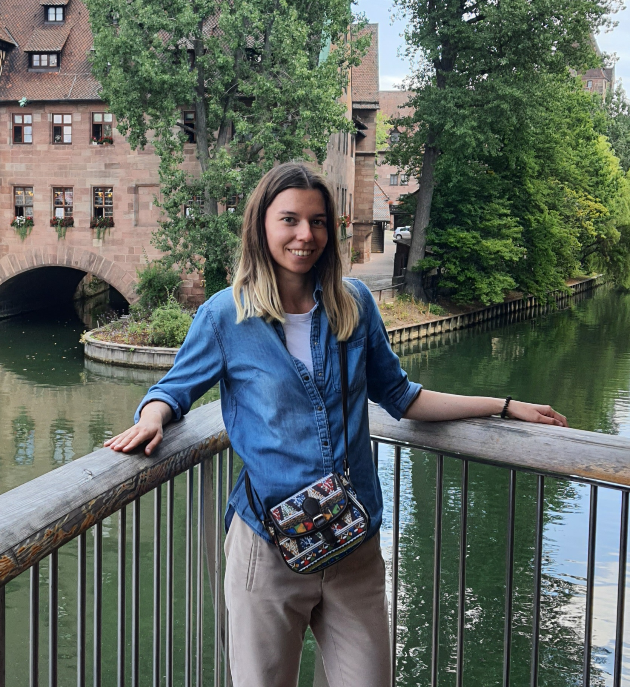
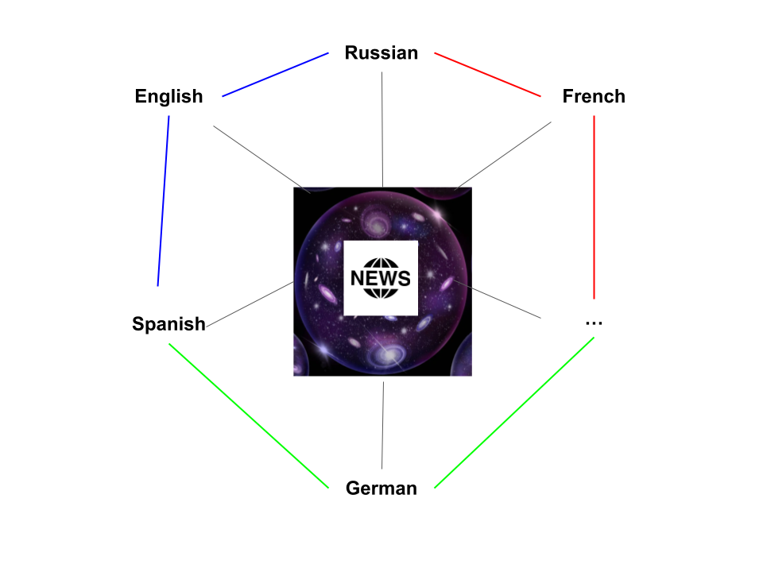
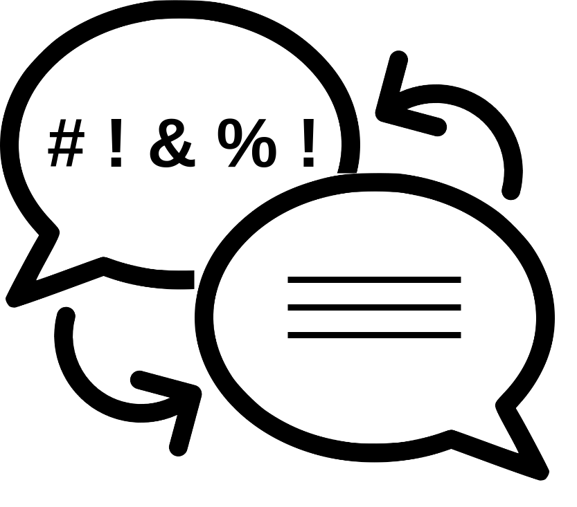
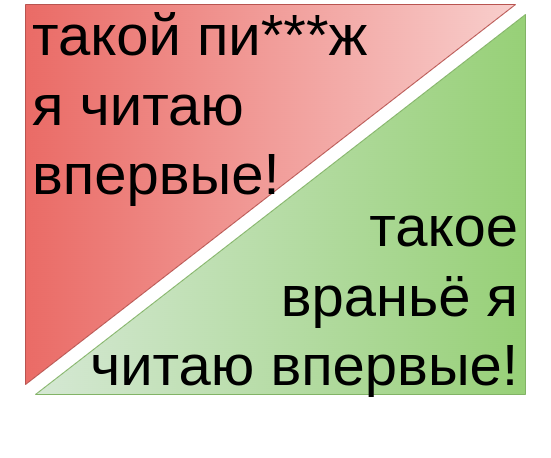
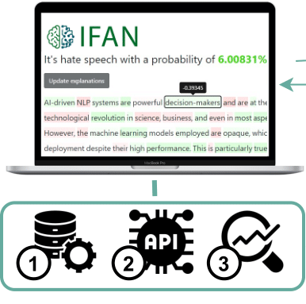
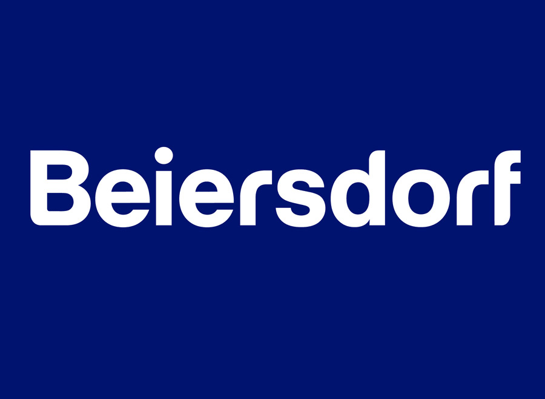

Hi, I'm Daryna 👋🇺🇦 I am a postdoctoral research at Social Computing Research Group in
 Technical University of Munich🇩🇪.
Before, I obtained my PhD degree at
Skolkovo Institue of Science and Technology under supervision of Alexander Panchenko with topic
"Method for Fighting Harmful Multilingual Textual Content" 📜.
Currently, I continue to follow my research vector participating in eXplainable AI (XAI) project.
More details in my CV.
Technical University of Munich🇩🇪.
Before, I obtained my PhD degree at
Skolkovo Institue of Science and Technology under supervision of Alexander Panchenko with topic
"Method for Fighting Harmful Multilingual Textual Content" 📜.
Currently, I continue to follow my research vector participating in eXplainable AI (XAI) project.
More details in my CV.
Research
I am interested in applying Large Lange Models (in both monolingual and multilingual setups) to different task of NLP for Social good (NLP4SG). Moreover, I would like to make my solutions interpretable and efficient. The key topics I am currently focusing on are:- Fake News Detection using Multulingual Evidence: how we can extend fake news detection to multilingual case easily? how multilingual news can help to assess information more critically? We desgin a new feature based on cross-lingual news comparison that can help to show what different countries and different medie say about the event and evaluate the facts more critically (Multiverse)
- Text Style Transfer: Text Detoxification Case: how can we fight toxic language more proactively? how we can collect parallel corpus for text style transfer task? how can we transfer knowledge of style between languages? We address for the first time text detoxiifcation task as seq2seq task by obtaining parallel corpora for English and Russian languages and developing monolingual, multilingual, and cross-lingual approaches (Text Detoxification).
- XAI for NLP: how can we explaine NLP models and help them with human feedback? We are exploring how we can utilize explanation in human-in-the-loop pipeline for models' performance improvement. (IFAN).
- Ukrainian NLP🇺🇦: I am propagating all the above described technologies to the Ukrainian language as right now the fight with fake news and hate speech for Ukraine is important as never before!

Multiverse: Multilingual Evidence for Fake News Detection
Accepted to MDPI, 2023

ParaDetox: Detoxification with Parallel Data
ACL, 2022

Methods for detoxification of texts for the russian language
MDPI, 2021

IFAN: An Explainability-Focused Interaction Framework for Humans and NLP Models
OpenSource Contribution🤗
Before, I contributed to s-nlp groud. More specifically,:- ParaDetox: English parallel corpus for texts detoxification;
- roberta_toxicity_classifier: English toxicity classification model;
- bart_detox: English SOTA for texts detoxification;
- RuParaDetox: Russian parallel corpus for texts detoxification;
- ruT5_detox: Russian SOTA for texts detoxification;
- xlmr_formality_classifier: Multilingual model for texts formality classification;
- Multiverse: Code for Multiverse feature extraction;
Experience
-
TUM
Postdoctora Researcher
Jun 2022 - present
Project: IFAN: An Explainability-Focused Interaction Framework for Humans and NLP Models
-
Skoltech
Research Engineer
Mar 2021 - Mar 2022
Project: Texts Detoxification: Monolingual and Multilingual Setups
-

Beiersdorf
Data Science Intern
Jun 2018 - Aug 2018
Project: News Trend Monitoring for Self-care Novelties Detection
-
Visiology
Data Scientist
Aug 2017 - Aug 2019
Project: NLP2SQL Chatbot for Business Intelligence Platform
Talks
- NLP for Social Good: Methods for Fighting Harmful Multilingual Textual Content
- Texts Detoxification